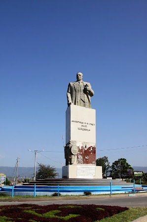
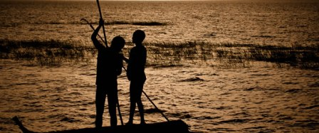

The culture in the region is well known for its most diverse values than any part of the country. As a capital of Southern Region and Sidama zone, there are government bureaus and organizations who are promoting culture and availing facilities for tourists. Some tourist attractions are also found in nearby areas. Please click here to learn more about cultural attractions in Hawassa.

Even though Hawassa does not have rich historical attraction in and around the city, there are places that worth visiting once you are in Hawassa. As a one of young and well developed city in the country most of the attractions are attributed to natural and cultural values.
The natural attractions around Hawassa city are rich in vegetation, wildlife, hills and mountains and Water bodies. There are a number of endemic birds, fish and plants around the lake and nearby areas. There are also hot springs, reserved parks and water bodies you can visit and enjoy in and around Hawassa. You can have bird watching scene, fishing, mountain climbing, and sport on lake side beach areas, camp fire or lodging.
